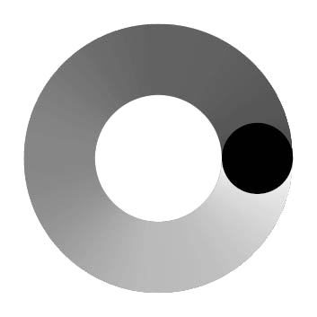

Направление: Точка Роста
Стратегические проекты Университета
Миссия Московского Политеха – готовить квалифицированные кадры и быть центром компетенций для развития техники, технологий, технологического предпринимательства, цифровой экономики и профессий будущего на основе полидисциплинарности, проектной деятельности, международного сотрудничества, тесного взаимодействия с государством и бизнесом.
Повестка
Формирование кадровой элиты для университета и региона.
Сейчас
- 9 стратегических целей
- 20 стратегических проектов
Как планируется в будущем
Активная проработка проектов
Эффекты
подготовка профессионалов, развитие сообщества лояльных выпускников вовлечение студенческого и профессионального сообщества в повестку университета
Проекты
1. Проект «Новая библиотека»
Целью проекта является создание единого культурного и информационного пространства библиотеки с современными и востребованными сервисами, максимально привлекательных и удобных условий для саморазвития и самопознания, интегрированного в современный образовательный процесс.
2. Проект «Повышение экспортного потенциала»
Целью проекта является развитие экспортного потенциала Московского политехнического университета за счет увеличения численности иностранных обучающихся и роста академической мобильности.
3. Проект «Развитие научных компетенций и научной репутации»
Целью проекта является повышение конкурентоспособности университета в научной сфере путем формирования и обеспечения устойчивого развития центров научных компетенций и повышения публикационной активности.
4. Проект «Развитие системы взаимодействия с выпускниками»
Целью проекта является развитие системы взаимовыгодного партнерства университета и сообщества его выпускников.
5. Проект «Развитие инновационной деятельности»
Целью проекта является создание открытой рыночно-ориентированной инновационной экосистемы университета, органично встроенной в инновационный кластер Москвы и инжиниринговую инфраструктуру государственных корпораций.